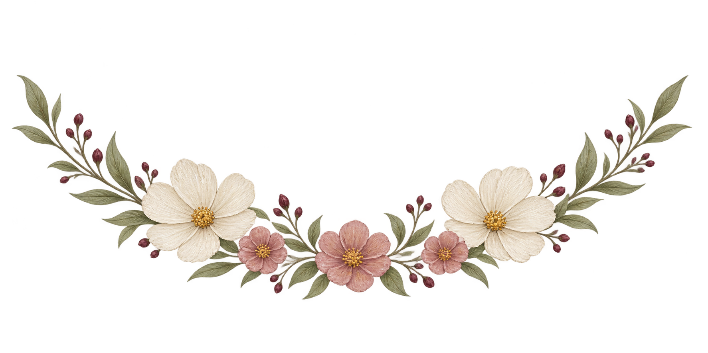
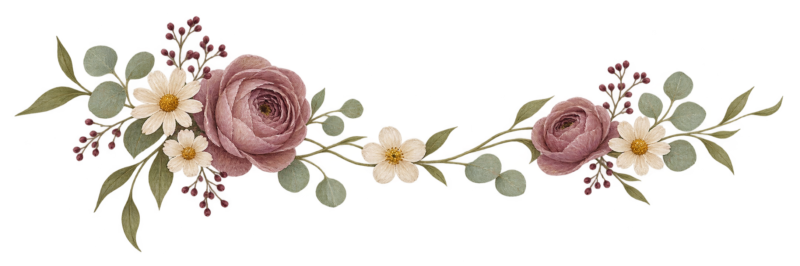
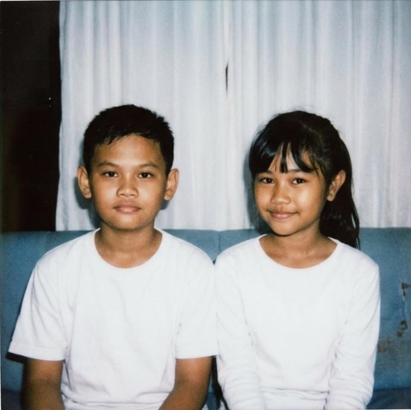
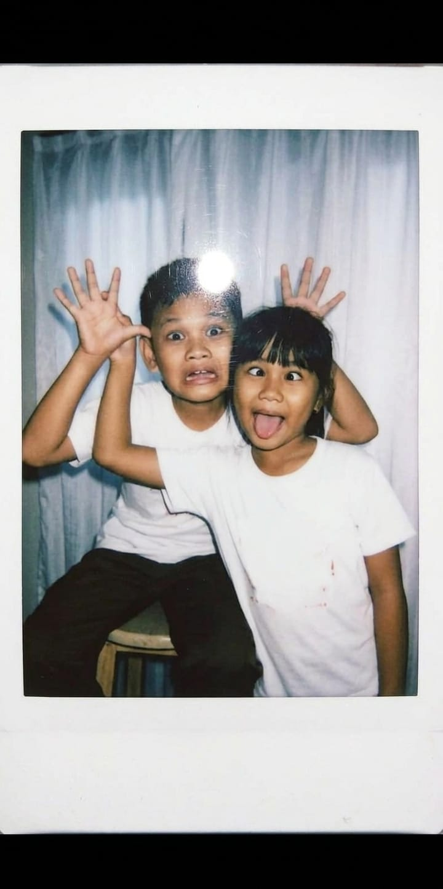

Mei Kurniawati
Putri dari
Bapak Maman Suryaman & Ibu Wiji

a new chapter of us
DIBUAT DENGAN CINTA & SEDIKIT NOSTALGIA
We are getting married

BISMILLAHIRRAHMANIRRAHIM
Assalamu’alaikum Warahmatullahi Wabarakatuh
Dengan penuh rasa syukur dan bahagia, kami mengundang Bapak/Ibu/Saudara/i untuk hadir dan memberikan doa restu di hari pernikahan kami.
Meet the soon-to-be newlyweds!

Putri dari
Bapak Maman Suryaman & Ibu Wiji
Putra dari
Bapak Salipan & Ibu Darmi
Lingkari tanggalnya. Sisakan waktunya.
THE WHEN & THE WHERE
Pukul 13.00 WIB
Pukul 13.00 WIB — selesai
Jl. Tentara Rakyat Mataram No. 43,
Yogyakarta
A LITTLE THROWBACK

Dari foto yang tersimpan,
menuju kenangan yang akan kita ciptakan.
BUKU TAMU
Tulis ucapan dan konfirmasi kehadiranmu.
Pesanmu akan tampil di buku tamu ini.
Geser di dalam kotak untuk membaca ucapan lainnya ↓
A LITTLE GIFT, A LOT OF LOVE
Doa dan kehadiranmu adalah hadiah terindah.
Jika ingin berbagi tanda kasih,
kami menerimanya dengan penuh terima kasih.
0621849743
a.n. Mei Kurniawati
Memuat ucapan…